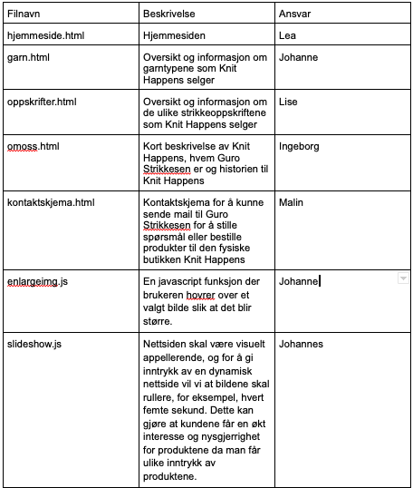
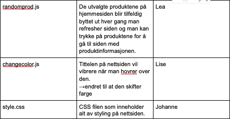

18.11.2022
Johanne, Johannes, Malin, Ingeborg, Lea og Lise
Client: Guri Strikkesen, eier av strikkebutikken Knit Happens
Guri eier strikkebutikken Knit Happens og er lidenskapelig opptatt av strikking. Hun er også opptatt av å spre “strikkeglede” til folket. Guri har drevet en fysisk butikk i Trondheim siden 2015. Nå ønsker hun en nettside for å være mer tilgjengelig for alle, spesielt yngre.
Endringer i CSS
 